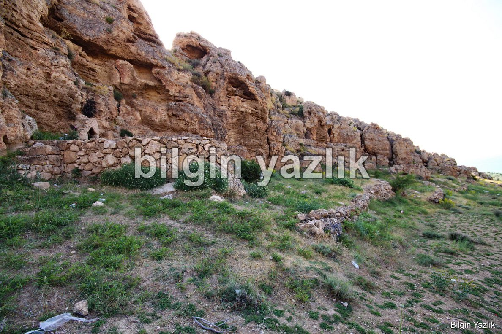
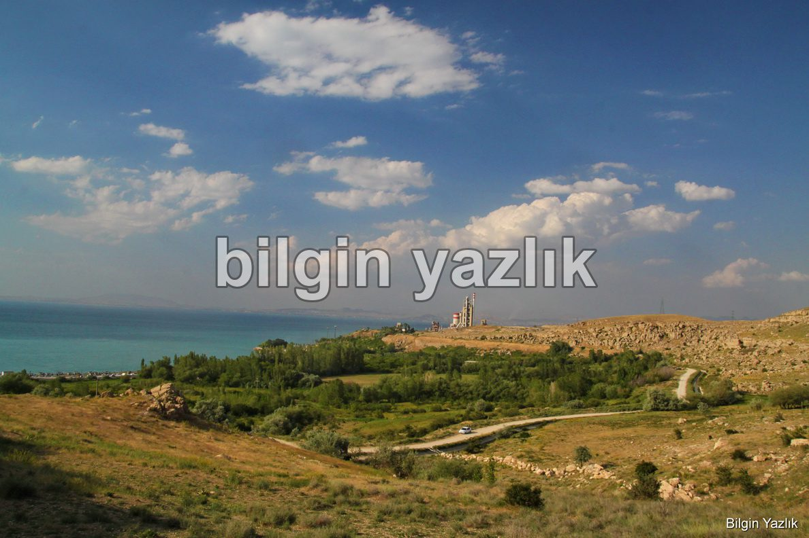
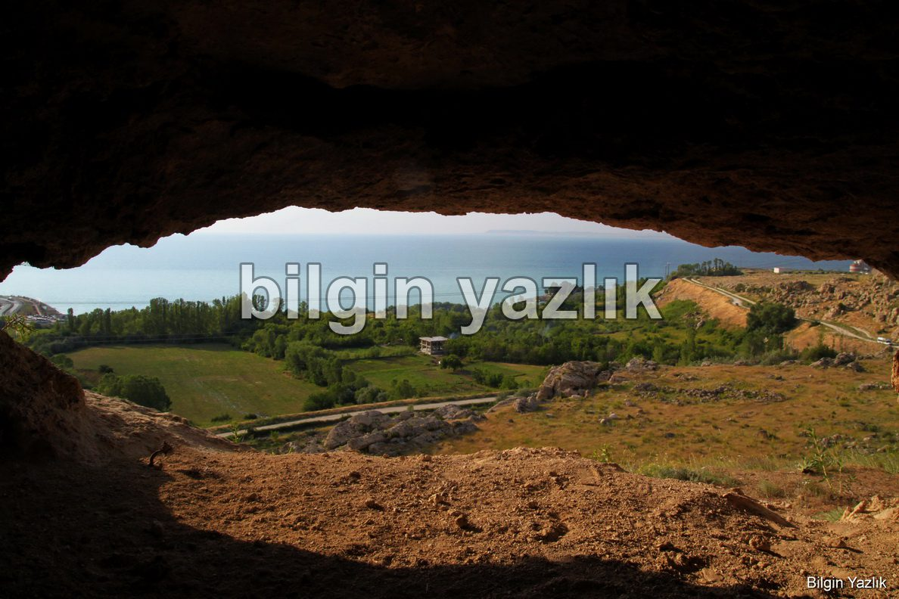
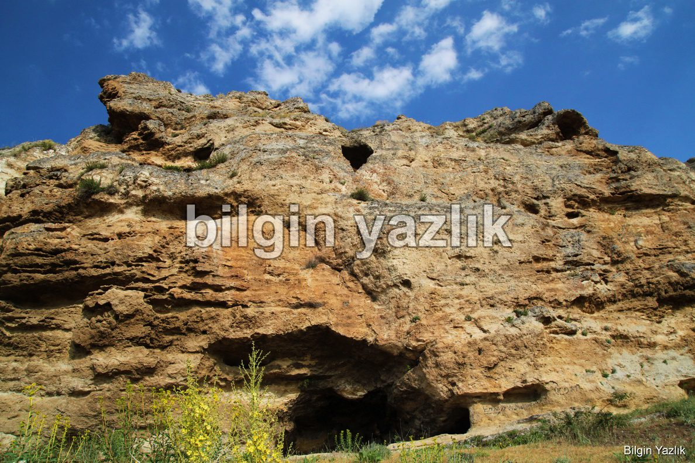
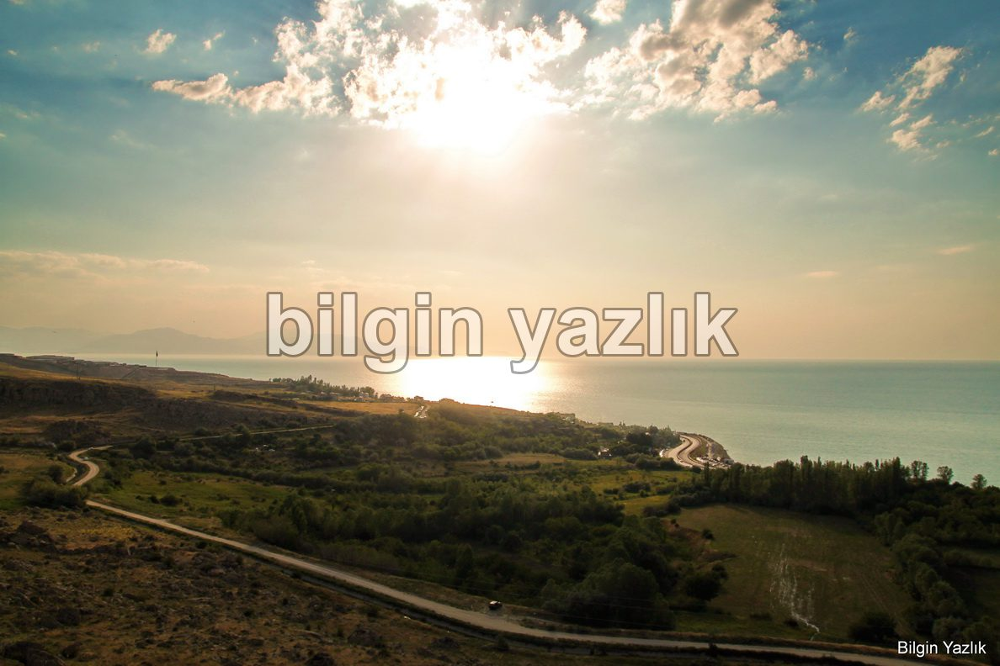
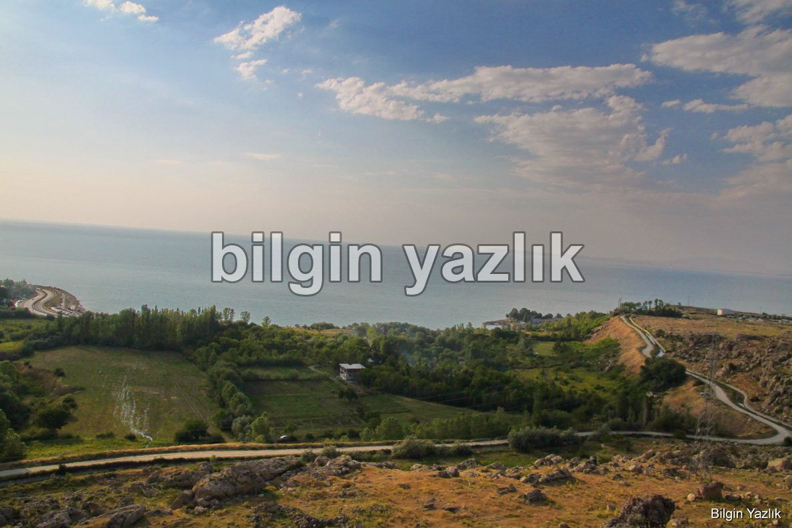
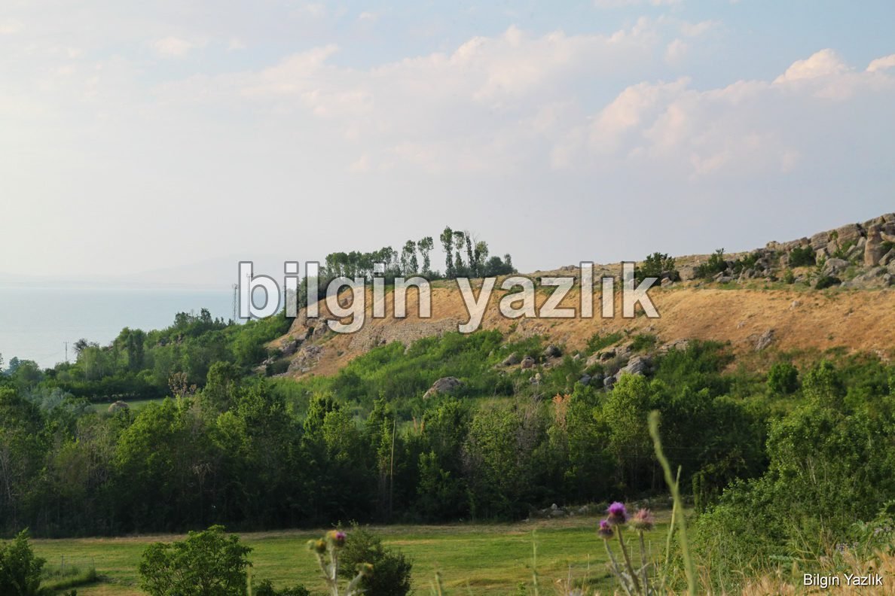

Kadem Bastı (Tariria Üzüm Bağları)
Kral Menua’nın eşi Tariria için kurmuş olduğu ünlü üzüm bağları, Kadem Bastı (Kadembas) adlı mevkide yer almaktadır. Bu bölge şehir merkezinde yaklaşık 20 km uzaklıkta olup çimento fabrikasının güneyine düşmektedir. Bölge yaklaşık 6 km2 bir alana sahiptir ve çevresi tepelerle çevrili göle bakan, yarım ay şeklindedir. Bu nedenle de çevresine göre daha az rüzgar almakta ve daha çok güneş almaktadır. En önemlisi bu bölgenin tam üstünden doğu tarafından Menua (Şamram) kanalı akmaktadır.
Teras destek duvarı kalıntıları
Bölge tamamı yapay olarak bölgeye taşınmış topraklarla el yapımı teraslanmıştır. Teraslama işlemi için destek duvarları örülmüştür, bugün bu destek duvarları görülebilmektedir. Bu destek duvarları içerisine dökülen ve basılarak ezilen topraklardan dolayı bölgeye Osmanlı döneminden bu yana “uğurla ayak basılan yer” anlamına gelen “Kadem Bastı” denilmektedir.
Kadem Bastı Mevkii
Ayrıca Kadem Bastı bölgesinde Menua kanalının en büyük destek duvarları yer almaktadır, yer yer 18 metre yüksekliğe ulaşan destek duvarları görülmeye değerdir.
Bölgede küçük mağaralar bulunuyor
Kadem Bastı bölgesinde 5 adet Urartu yazıtı bulunduğu bilinmektedir. Bu yazıtlardan bir tanesi bağlardaki üzümleri çalanlara verilecek olan cezayı tanımlayarak farklılaşmaktadır.
Dev Damı Mağarası girişi (yukarıda)
Kadem Bastı bölgesi çöldeki vaha gibi karşınıza çıkar, Menua kanalının serin ve bol suyu ile beslenen bağlar Van Gölü’nün mavisi ile birleşir, seyri son derece keyif verir.
Menua Kanalı ve Suladığı Tariria Bağları
Tariria adına diktirilen bu üzüm bağları o kadar ihtişamlıdır ki Assur Kraliçesi Semiramis’in ünlü asma bahçeleri ile özdeşleştirilir ve efsanelere konu edilir.
Menua Kanalı
Kadem Bastı bölgesinde yöre insanının Dev Damı olarak adlandırdığı yaklaşık 50 metre kare alana sahip bir de mağara bulunmaktadır, bu mağara yürüyerek ulaşılabilir değildir.
Menua Kanalı Destek Duvarları
Bölgede muhtemelen bağın bakımı ve korunmasından sorumlu kişilerin konakladığı yapılar olduğu anlaşılan yapıların da temel taşları görülebilmektedir.
Kaynak: Van Gölü Havzası’nda Urartu Bağcılığı ve Şarap Kültürü, Prof. Dr. Oktay Belli, IV. Uluslararası Van Gölü Havzası Sempozyumu, 2008.







Bu yazı taliyol arşivinden taşınmıştır. · özgün kayıt